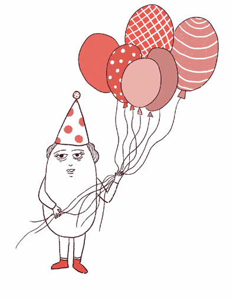
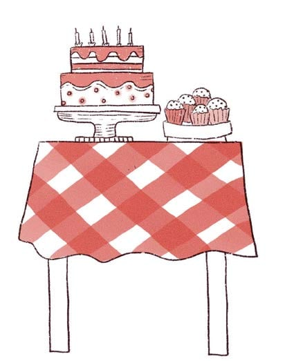
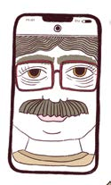
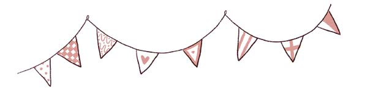
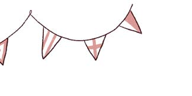
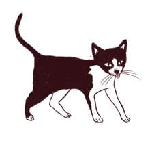

Había muchos globos en la puerta. Jugamos a la búsqueda del TESORO, salté en la cama elástica, y corrí a Pedro, Delfi y Guille.
Cuando Pedro sopló las velitas, su abuela sostuvo el celular con la cara del abuelo, que estaba de viaje, para que pudiera cantarle desde la PANTALLA. Se escuchó terrible, no sé si fue por mala conexión o porque el abuelo cantó muy desafinado. El papá de Pedro sacó millones de fotos.
De SORPRESITA me tocaron caramelos y acuarelas.
Justo en el momento en que le estaba contando a mamá que Simón y Juliana encontraron el tesoro, cuac cuac cuac, llegaron las FOTOS del cumple.
El papá de Pedro borró la foto en la que Lucía salió toda roja, a punto de llorar; a Lucía le hubiese dado mucha vergüenza. A
Juliana le encanta salir haciendo morisquetas, así que esas fotos quedaron todas. En la última estaba Pedro frente a su gata, moviendo los cascabeles que le regalé.